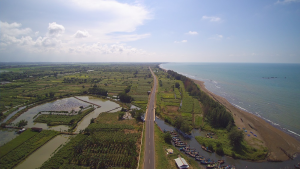

Letak dan Kondisi Geografis

Jalur Nasional Pantura Jawa, 2016, dok. BAPPEDA Kab. Batang
Kabupaten Batang terletak pada 6° 51' 46" sampai 7° 11' 47"
Lintang Selatan dan antara 109° 40' 19" sampai 110° 03' 06" Bujur
Timur di pantai utara Jawa Tengah dan berada pada jalur utama yang
menghubungkan Jakarta-Surabaya. Luas daerah 78.864,16 Ha.
Batas-batas wilayahnya sebelah utara Laut Jawa, sebelah timur
Kabupaten Kendal, sebelah selatan Kabupaten Wonosobo dan Kabupaten
Banjarnegara, sebelah barat Kota dan Kabupaten Pekalongan.
Posisi tersebut menempatkan wilayah Kabupaten Batang, utamanya Ibu
Kota Pemerintahannya pada jalur ekonomi pulau Jawa sebelah utara.
Arus transportasi dan mobilitas yang tinggi di jalur pantura
memberikan kemungkinan Kabupaten Batang berkembang cukup
prospektif di sektor jasa transit dan transportasi.
Kondisi Wilayah
Kondisi wilayah Kabupaten Batang merupakan kombinasi antara daerah
pantai, dataran rendah dan pegunungan. Dengan kondisi ini Kabupaten
Batang mempunyai potensi yang sangat besar untuk agroindustri,
agrowisata dan agrobisnis.
Jarak dengan Daerah Lain
Jarak Kabupaten Batang dengan daerah-daerah lain:
- Pekalongan : 9 Km
- Pemalang : 43 Km
- Tegal : 72 Km
- Cirebon : 144 Km
- Jakarta : 392 Km
- Kendal : 64 Km
- Semarang : 93 Km
- Surabaya : 480 Km
Topografi
Keadaan topografi wilayah Kabupaten Batang terbagi atas tiga bagian yaitu pantai, dataran rendah dan wilayah pegunungan. Ada lima gunung dengan ketinggian rata-rata diatas 2000 m, yaitu:
- Gunung Prau : 2.565 mdpl
- Gunung Sipandu : 2.241 mdpl
- Gunung Gajah Mungkur : 2.101 mdpl
- Gunung Alak : 2.239 mdpl
- Gunung Butak : 2.222 mdpl
Kondisi wilayah yang merupakan kombinasi antara daerah pantai, dataran
rendah dan pegunungan di Kabupaten Batang merupakan potensi yang amat
besar untuk dikembangkan pembangunan daerah bercirikan agroindustri,
agrowisata dan agrobisnis. Wilayah Kabupaten Batang sebelah selatan
yang bercorak pegunungan misalnya sangat potensial untuk dikembangkan
menjadi wilayah pembangunan dengan basis agroindustri dan agrowisata.
Basis agroindustri ini mengacu pada berbagai macam hasil tanaman
perkebunan seperti : teh, kopi, coklat dan sayuran. Selain itu juga
memiliki potensi wisata alam yang prospektif di masa datang.
Keadaan dan Pemanfaatan Tanah
Wilayah yang sebagian besar adalah pegunungan dengan susunan tanah
sebagai berikut : latesol 69,66%; andosol 13,23%; aluvial 11,47% dan
podsolik 5,64%. Susunan tanah tersebut menentukan penyediaan prasarana
sebagian besar ditujukan untuk budidaya hutan, perkebunan dan
pertanian. Adapun penggunaan hutan dan perkebunan mayoritas di tangan
Negara. Sedangkan pertanian baik kering maupun basah (irigasi
sederhana dan irigasi teknis) dilakukan oleh warga setempat.
Perubahan areal pemanfaatan tanah sangat stagnan, walaupun Kabupaten
Batang terletak di jalur ekonomi. Lebih kurang 60% diusahakan sebagai
hutan, perkebunan dan areal pertanian yang memberikan hasil komoditi
berupa kayu jati, kayu rimba, karet, teh, coklat, kapuk randu dan
hasil pertanian lainnya.
Pembagian Wilayah Administratif
Berdasarkan Peraturan Daerah Kabupaten Batang Nomor 7 Tahun 2004
tentang Pembentukan Kecamatan Kabupaten Batang, jumlah kecamatan di
Kabupaten Batang yang semula 12 kecamatan berubah menjadi 15
kecamatan. Pemekaran wilayah ini dilakukan oleh Pemerintah Kabupaten
Batang sebagai upaya untuk menyelenggarakan urusan pemerintahan dalam
penyelenggaraan pemerintahan, pembangunan dan pelayanan kepada
masyarakat khususnya pada tingkat kecamatan, desa, dan kelurahan.
Sedangkan tujuannya adalah untuk:
1. Meningkatkan efektifitas penyelenggaraan pemerintahan di tingkat
kecamatan,
2. Meningkatkan dan mendekatkan pelayanan kepada masyarakat,
3. Meningkatkan dan mempercepat pemerataan pembangunan.
2. Meningkatkan dan mendekatkan pelayanan kepada masyarakat,
3. Meningkatkan dan mempercepat pemerataan pembangunan.